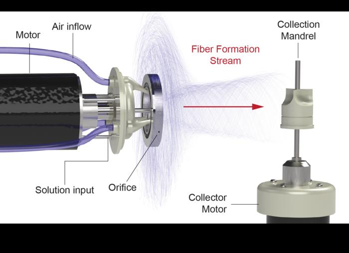
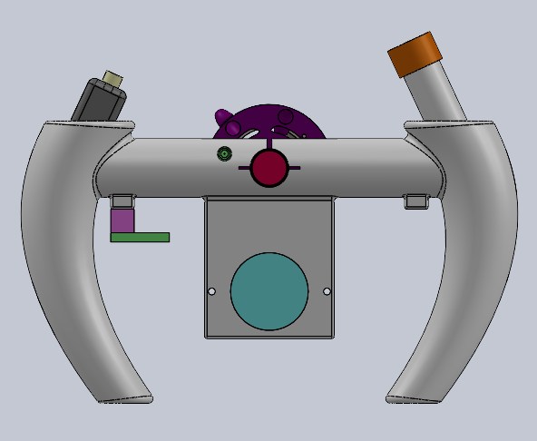
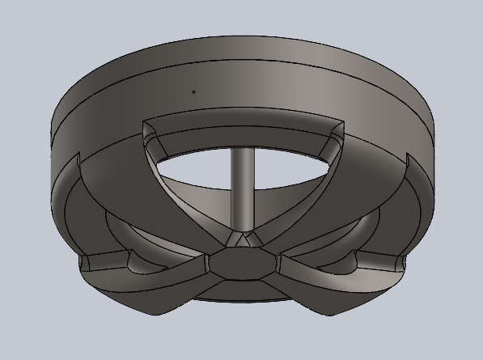
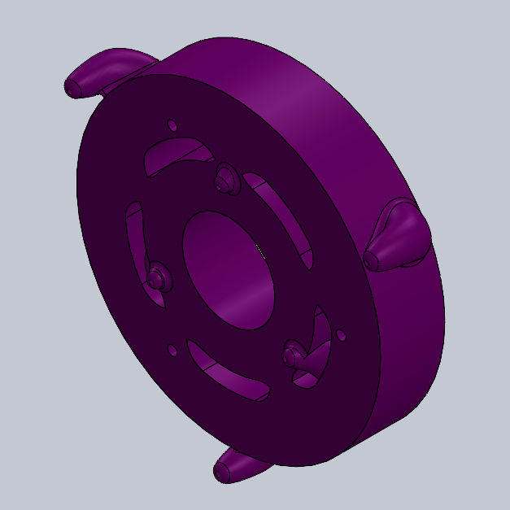
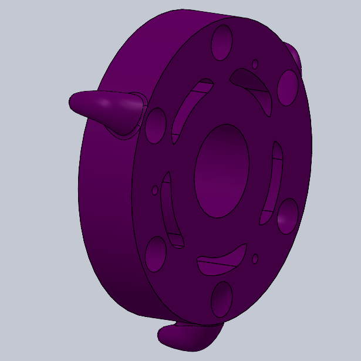
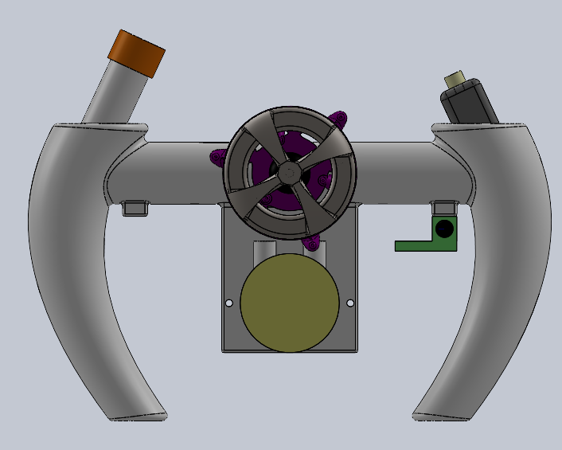

Portable FRJS

Project Overview
I designed and developed a handheld Focused Rotary Jet Spinning (FRJS) system to miniaturize a traditionally bench-scale fiber manufacturing process. Conducted through undergraduate research in the H.B. Chang Lab, the project combined mechanical design, compact packaging, subsystem integration, and experimental testing.
I personally completed the CAD design, fabrication, assembly, and testing of the prototype. The system successfully produced fibers in a controlled environment and achieved 95% collection efficiency by volume during enclosed testing.
From Bench-Scale Process to Handheld Device
Focused Rotary Jet Spinning (FRJS) is a fiber-manufacturing technique used in nanofabrication. Rapid rotation drives a polymer solution out of the spinneret, drawing it into fine fibers, while focused air streams guide the fibers toward a collector. The resulting fibrous structures can support applications such as tissue-engineering scaffolds.
Conventional bench-top apparatus requires substantial space and a fixed laboratory setup. The purpose of this project was to substantially reduce the size and integrate rotation, airflow, and solution delivery into a handheld device, making the process easier to transport and creating a path toward fiber production beyond fixed laboratory settings. My design work addressed rotational stability, airflow performance, and access to the delivery hardware. The prototype was evaluated under controlled conditions; enclosed testing demonstrated fiber production and collection in that setting.

Mechanical Integration
I integrated a battery-powered pencil grinder to drive the spinneret. This provided the rotating element of the device and shaped the mechanical layout of the handheld assembly.
I developed CAD models to package the drive, spinneret, and supporting components together. The design required coordinating the rotating assembly with the surrounding airflow and solution-delivery interfaces.

Spinneret Redesign
I moved the spinneret stem farther into the main body, shifting its center of mass rearward toward the drive connection. This change improves stability at the usual operating speed of 10,000 rpm by reducing the forward offset of the rotating mass.
I also angled the spokes to create more clearance for air from the inner-focused jets to pass through the spinneret. Coordinating the spoke geometry with the air-jet arrangement connected the mechanical redesign with the airflow needed to guide and collect fibers.

Airflow and Solution Delivery
I selected a six-channel air-jet design with three outer-focused jets and three inner-focused jets to improve fiber collection. The two sets of jets were arranged around the spinneret to guide the fiber stream toward the collector. Integrating this arrangement into a compact air-jet ring substantially reduced the size compared with conventional bench-top setups, while preserving the airflow paths needed for the process.
A peristaltic pump mounted on the handheld stand delivered solution to the spinneret at a steady flow rate of approximately 5 mL/min. I integrated the pump and delivery path with the mechanical assembly, bringing solution delivery, rotation, and airflow together in one prototype.



Results and Project Outcome
The enclosed test achieved 95% collection efficiency by volume, based on the volume collected on the plate divided by the total volume recovered from the plate and elsewhere in the enclosure.
This result demonstrated successful fiber production and collection under the tested conditions. The project also gave me experience taking a research device from CAD through fabrication, assembly, and experimental evaluation, using observed performance to guide mechanical and subsystem-integration decisions.